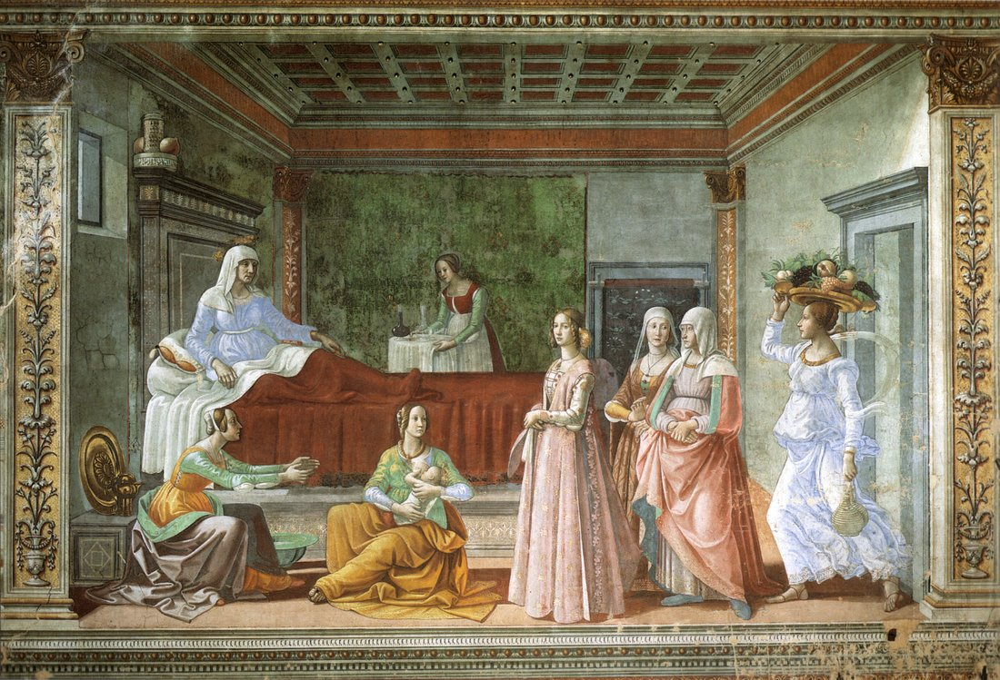

John 16 — The Mister Translation

This chapter has no scene of its own — it is forty minutes of Jesus talking — so this image borrows its one concrete picture: a woman in labor, then a room full of people rejoicing that a child has been born into the world (v21). ⚠ Be clear about what is and is not being claimed. This is not a picture of John 16. It is Ghirlandaio's own birth of a different child entirely — the one chapter earlier in this same book's own sequence, Zechariah and Elizabeth's son (Luke 1:57–66, already on these pages) — painted two centuries after the Gospel, in a Florentine bedroom with a Florentine household's own wet-nurse and visitors, not a first-century Judean one.
What the fresco gets right is the shape of the image, not the identity of the mother. Elizabeth lies calm and finished; the anguish described in Luke's own chapter is already over, and the room is full of women come to share the joy rather than the pain. That is the exact hinge Jesus describes in verse 21: labor ends, and what is remembered afterward is not the pain but the child.
⚠ One more honest gap. Jesus never names whose labor he means — it is a comparison, not a reference to a particular birth in this book. This image supplies a face and a room the text itself withholds, which is exactly the kind of substitution a reader should notice rather than absorb as if the chapter had described it.

Notes on this translation
⚠ ‘Stumble’ (skandalizō, v1) is the identical verb this Gospel last used of the Twelve themselves, after the hardest line of the bread-of-life discourse: ‘Does this skandalizei you?’ (John 6:61, already on these pages, rendered there as ‘offend’ to match the shelf’s older habit). There the stakes were a hard teaching that cost Jesus a portion of his own disciples; here the stakes are literal — synagogue expulsion and death — and this translation keeps the verb’s own harder, more physical sense, ‘trip up,’ because the chapter is no longer asking whether a sentence can be misunderstood but whether a threat can break someone’s nerve.
⚠ ‘Put you out of the synagogue’ (v2) is the third and final occurrence of a word this Gospel appears to have coined, aposynagōgos, and each time the threat has grown more concrete. First it was the parents’ private fear (9:22, already on these pages); then it was the reason ‘many of the authorities’ kept their faith secret (12:42, already on these pages); now Jesus names it to his own disciples’ faces, openly, as a coming fact rather than someone else’s private dread.
‘Everyone who kills you will think he is offering sacred service to God’ (v2) describes a killer who is sincerely religious, not merely hostile — a distinction this translation’s shelf comparisons keep separate from ordinary persecution. NIV ‘offering a service to God’; KJV ‘doeth God service’; the word is latreia, the same noun used elsewhere of formal temple worship — the killing is imagined, from inside the killer’s own head, as an act of piety.
⚠ ‘None of you asks me, “Where are you going?”’ (v5) is a strange claim to make at this exact table, because Peter asked precisely that question three chapters earlier — the same verb, the same words: ‘Lord, where are you going?’ (John 13:36, already on these pages). This translation states the tension rather than explaining it away: the likeliest reading is that the mood in the room has shifted — grief has now crowded out curiosity (v6) where Peter’s own question had been confident enough to draw a prediction about a rooster — but the sentence as written simply does not fit a flat chronology with chapter 13’s own question, and this project leaves the seam visible rather than smoothing it.
‘The Advocate’ (v7) is the fourth of this Gospel’s five uses of paraklētos (14:16, 14:26, 15:26, now here, and finally 1 John 2:1, where the paraklētos is Jesus himself) — see the dictionary entry for why no English or Spanish word has ever satisfied every translator at once. This verse supplies the trade the whole Farewell Discourse has been building toward: the Advocate’s arrival is conditioned on Jesus’s own departure, stated as a plain exchange — ‘if I do not go away, the Advocate will never come… if I go, I will send him.’
⚠ ‘The ruler of this world has been judged’ (v11) is the third and final time this exact phrase appears in this book, each time in Jesus’s own mouth and each time already on these pages out of this book’s own sequence — first announced as a coming eviction at the triumphal entry (‘now the ruler of this world will be cast out,’ John 12:31), then named again at this same supper two chapters earlier (John 14:30), and now, here, declared a settled verdict — kekritai, a perfect tense, a judgment already handed down rather than one still pending. The three uses trace a single arc: expulsion promised, then named, then adjudicated, and the adjudication lands before the arrest has even happened.
The Advocate’s own threefold work — sin, righteousness, judgment (vv8–11) — redefines all three words against the courtroom this chapter has just opened. ‘Sin’ is unbelief in Jesus, not a moral ledger; ‘righteousness’ is Jesus’s own vindication by his return to the Father, not a human virtue; and the ‘judgment’ is not of the disciples but of the world’s own ruler. ASV and KJV both print ‘convict’/‘reprove’ for elegxei; NIV ‘prove the world to be in the wrong,’ which states the verb’s forensic sense more plainly than either older choice.
⚠ ‘When he comes, the Spirit of truth’ (v13) is the third time in three chapters that this Gospel reaches for the masculine pronoun ekeinos where strict grammar calls for a neuter one to match pneuma — exactly as this project’s own note on John 15:26 already promised it would recur. The first instance stood the pronoun directly after its own appositive noun (14:26); the second put the neuter noun immediately before the masculine pronoun (15:26); this one puts the pronoun first and lets the noun phrase, ‘the Spirit of truth,’ follow in apposition — a third arrangement of the identical habit. Three times in three chapters is enough to call it a pattern rather than a slip, and this translation keeps the English ‘he,’ matching the Greek’s own persistent choice rather than smoothing it to the grammatically expected ‘it.’
‘He will not speak on his own, but he will speak whatever he hears’ (v13) states, of the Spirit, exactly the claim this Gospel has already made of Jesus himself more than once — that his own words are not self-originated (compare John 12:49, already on these pages, ‘I did not speak on my own initiative’). The same relation Jesus describes between himself and the Father is now stated of the Spirit and Jesus: a chain of hearing and declaring, not an independent source at either link.
‘Everything the Father has is mine’ (v15) is as sweeping a claim of shared possession as this Gospel makes anywhere, and the logic it supports is deliberately modest: the Spirit’s own message is guaranteed TRUE precisely because there is, on this verse’s own account, no third store of information for the Spirit to draw on — only what already belongs to the Father and the Son in common.
⚠ Mikron, ‘a little while,’ is said SEVEN times across these four verses — a count any reader can run for themselves (v16 twice, v17 twice, v18 once, v19 twice) — and the repetition is itself the point: the disciples cannot get past the phrase’s own surface to ask what it refers to. Every later use (vv17–19) is the disciples or the narrator quoting Jesus’s own v16 back at itself, turning one short sentence into the whole paragraph’s subject.
⚠ Verse 16 carries a real, visible textual question — and the shelf itself splits right down the middle of it. KJV closes the verse with a clause this translation’s own source text does not carry at all — ‘ye shall see me, because I go to the Father’; Douay-Rheims carries the identical clause, ‘you shall see me: because I go to the Father’; and the Geneva Bible carries a milder version of the same addition, ‘ye shall see me: for I go to the Father.’ ASV, NIV and the NWT (1984 and 2013 alike) all end the verse exactly where this translation does, one sentence shorter, with no such clause at all. The likeliest explanation sits in plain sight one verse later: the disciples’ own paraphrase at v17 tacks on ‘and, “because I am going to the Father”’ as a SEPARATE thing Jesus said, not as part of the little-while saying itself — which is exactly what an early copyist, reading ahead to v17, might have folded back into v16 to make the quotation match. This translation follows the shorter reading and lets v17’s own quotation carry the second half on its own account.
The disciples’ private confusion (vv17–18) sits beside something easy to miss: they quote the little-while saying back WORD FOR WORD, twice, correctly. Whatever they do not understand, it is not the sentence itself — it is what the sentence refers to. That gap between accurate repetition and real comprehension will matter again at v30, where the same disciples claim to understand everything.
Lypē, grief, and chara, joy, trade places four times across these three verses, and the verb each time is not ‘end’ or ‘stop’ but ‘become’ or ‘turn into’ (genēsetai, v20) — the grief does not simply stop; it is the very thing that converts into joy, the way labor itself becomes delivery. That is the image the woman in labor (v21) supplies literally: the pain is not a separate event the joy replaces but the pain’s own completion.
⚠ Whether ‘you’ (vv20, 22) and the woman in labor (v21) are one continuous image or two separate ones is a real question the Greek leaves open, and this translation does not resolve it for the reader. Kathōs, ‘just as,’ never appears to formally link the woman’s labor to the disciples’ own coming grief — v21 simply follows v20 with no connective word doing that work, so a reader is free to take it either as an explanatory parable or as Jesus moving to a second, loosely associated image of pain that resolves into joy. Every shelf version supplies some transition in translation (most read it as illustrative); the Greek itself does not insist on one.
⚠ The Greek verb at v22 is a plain present tense, airei — an ongoing fact, not a future promise — and only two of the five English-shelf versions checked here keep that tense. ASV keeps the present, ‘taketh away’; KJV keeps it too, ‘TAKETH’; but NIV moves to the future, ‘will take away’, the NWT 1984 and its 2013 revision both move to the future, ‘will take’, and Douay-Rheims moves to the future as well, ‘shall take’ — three of the five turning the Greek’s stated fact about this joy’s own nature into a promise about what will happen to it later. This translation keeps the Greek’s own present tense.
⚠ ‘Whatever you ask the Father, he will give you in my name’ (v23) is genuinely ambiguous in the Greek word order, and the shelf splits exactly along the ambiguity rather than resolving it. The phrase en tō onomati mou, ‘in my name,’ can be read as belonging to the ASKING or to the GIVING — two different claims about where Jesus’s name does its work in prayer. KJV reads ‘whatsoever ye shall ask the Father in my name, he will give it you’ (attached to the asking); NIV reads ‘my Father will give you whatever you ask in my name’ (attached to the asking as well); ASV reads ‘if ye shall ask anything of the Father, he will give it you in my name’ (attached to the giving instead); and the NWT (1984 and 2013 alike) reads ‘if YOU ask the Father for anything he will give it to YOU in my name’ (attached to the giving as well). This translation follows the reading this project’s own source text favors, attaching the phrase to the giving, but states the real ambiguity rather than letting the English silently decide it the way every shelf version does.
‘Until now you have not asked for anything in my name’ (v24) marks a hinge the chapter does not explain further: a form of prayer the disciples have never yet used becomes, from this point on, the standing instruction. ‘That your joy may be made full’ answers, almost word for word, the same completed-joy language already stated as Jesus’s own purpose for speaking at all (John 15:11, already on these pages).
⚠ ‘Figures of speech’ translates paroimia, a word this Gospel has used only once before — of the sheepfold discourse, where the narrator stated outright that ‘they did not understand what he was saying’ (John 10:6, already on these pages). Jesus now names his own manner of speaking by the identical word, and promises it is about to end: ‘an hour is coming’ — the same phrase that has marked every major turn of this Farewell Discourse — ‘when I will no longer speak to you in figures of speech, but I will tell you plainly.’ The disciples take the bait immediately and wrongly (v29): they believe the plain speech has already arrived, moments before Jesus tells them to their faces that they are about to scatter.
⚠ ‘I came from God’ (v27) carries a real manuscript split between ‘God’ (theou) and ‘the Father’ (patros), and the shelf itself divides almost down the middle of it — checked here, not assumed. KJV, NIV, the Geneva Bible and Douay-Rheims all read ‘God’; ASV and The Living Bible both read ‘the Father’ instead. The NWT itself changed its own mind between editions: the 1984 Reference Bible renders the phrase ‘as the Father’s representative,’ while the 2013 revision renders the identical Greek ‘as God’s representative’ — the same translation committee moving from one reading to the other. This translation follows ‘God,’ the better-attested reading, and lets the seam stand rather than silently harmonizing it toward v28’s own ‘the Father’ — every one of the six versions just named agrees on ‘the Father’ at v28, with no split at all one verse later.
The Father’s own love for the disciples (v27) is stated with phileō, not agapaō — the only time in this whole Farewell Discourse that the Father’s love for a disciple is named with this particular verb rather than the more familiar one, a reminder this project’s own dictionary entry on agapē already makes: John moves between the two verbs more freely than either English or Spanish usually allow a reader to notice.
⚠ ‘Now we know that you know all things’ (v30) is the most confident the disciples sound anywhere in this whole Farewell Discourse, and Jesus’s answer does not confirm it — it asks a question back: ‘Do you believe NOW?’ (v31), the same pointed arti, ‘now,’ the disciples themselves had just used a moment before (v29, ‘now you are speaking plainly’). The question is not rhetorical filler; the next sentence answers it for them, and the answer is no — not yet, not durably, within the hour.
⚠ ‘You will be scattered, each to his own home’ (v32) is the identical event the Synoptic Gospels frame explicitly as the fulfillment of a named prophecy — ‘I will strike the shepherd, and the sheep of the flock will be scattered,’ Zechariah 13:7, quoted outright at the moment of arrest (Matthew 26:31; Mark 14:27, both already on these pages). This Gospel never cites Zechariah here at all; Jesus simply states the scattering as a plain fact about the next few hours, with no scriptural citation attached to it the way nearly every other major event in this book’s own closing chapters gets one.
‘Yet I am not alone, because the Father is with me’ (v32) closes the discourse on the same claim it opened with three chapters earlier — a trouble named honestly, and a presence that does not remove the trouble but sits inside it. The disciples are about to be proven wrong about their own confidence; Jesus’s own claim, stated at the identical moment, is not tested by the same hour and does not fail.
⚠ ‘I have conquered the world’ is a perfect tense, nenikēka — a completed action with standing results, said of a victory that, by any ordinary clock, has not happened yet. The arrest is hours away; the cross has not been raised; and the verb nonetheless states the outcome as already and permanently achieved. This is the same grammar this Gospel has already used of ‘it is finished’ before it is finished (compare the anticipatory ‘the hour has come’ at 12:23, already on these pages) — a victory this book treats as settled in advance of the event that will visibly secure it.
‘Affliction’ (thlipsis) and ‘peace’ are set side by side with no attempt to trade one for the other — the peace is in me, the affliction is in the world, two different locations rather than two incompatible facts about one. This chapter’s whole argument about grief becoming joy (vv20–22) is restated here in one closing sentence, and the chapter that follows turns from instruction to prayer.
Patterns worth carrying forward.
⚠ Renderings chosen. Skandalizō (v1) is kept as ‘stumble’ rather than repeating 6:61’s ‘offend,’ because this chapter’s own stakes — a literal threat to life — call for the verb’s harder, more physical sense. Paroimia (vv25, 29) is kept as ‘figures of speech’ both times, matching the rendering already used at its one earlier appearance (John 10:6). En tō onomati mou at v23 is attached to the giving rather than the asking, with the real ambiguity stated rather than silently resolved. ‘God’ is kept at v27 against ‘the Father,’ following the better-attested reading while flagging the split. Airei at v22 is kept in the present tense rather than the shelf’s common future.
Echoes paid. Skandalizō (v1) returns the verb from John 6:61 (already on these pages). Aposynagōgos (v2) reaches its third and final occurrence, after 9:22 and 12:42 (both already on these pages). ‘The ruler of this world’ (v11) reaches its third and final use, after 12:31 and 14:30 (both already on these pages). The masculine ekeinos for the neuter pneuma (v13) recurs for the third time, after 14:26 and 15:26 (both already on these pages), exactly as that second note promised. ‘That your joy may be made full’ (v24) answers 15:11 (already on these pages). And paroimia (vv25, 29) returns the word from 10:6 (already on these pages).
Echoes planted. The scattering Jesus predicts with no scriptural citation (v32) is the same event the Synoptic Gospels name as Zechariah 13:7’s fulfillment, not yet linked from these pages. The disciples’ claim to ‘know all things’ (v30) is tested within the hour and found premature; this Gospel’s own later chapters will show Peter’s denial and the group’s own locked-room fear as the scattering made concrete. And ‘I have conquered the world’ (v33) is the discourse’s own closing claim before the prayer of John 17, not yet on these pages, picks the conversation back up addressed to the Father rather than the disciples.
Left open on purpose. Whether ‘none of you asks me where I am going’ (v5) is reconciled with Peter’s identical question three chapters earlier, or whether this book simply lets the seam between the two scenes show. Whether vv20–22’s grieving ‘you’ and the woman in labor are one continuous image or two loosely joined ones. And which reading of v23’s word order — ‘ask... in my name’ or ‘give... in my name’ — the earliest text actually intended, a question this translation states rather than settles.
Already up ahead of sequence, now fully folded in: John 14 and John 15. This book’s own sequence now runs unbroken from chapter 1 through this chapter. Next: John 17, the prayer this whole discourse has been building toward.